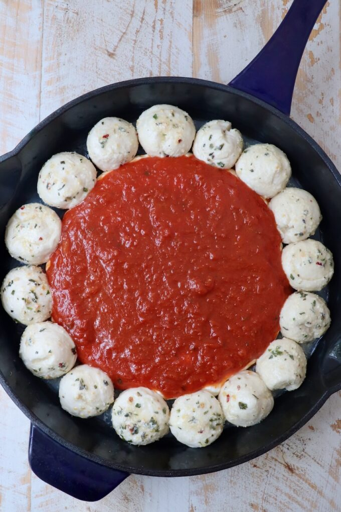
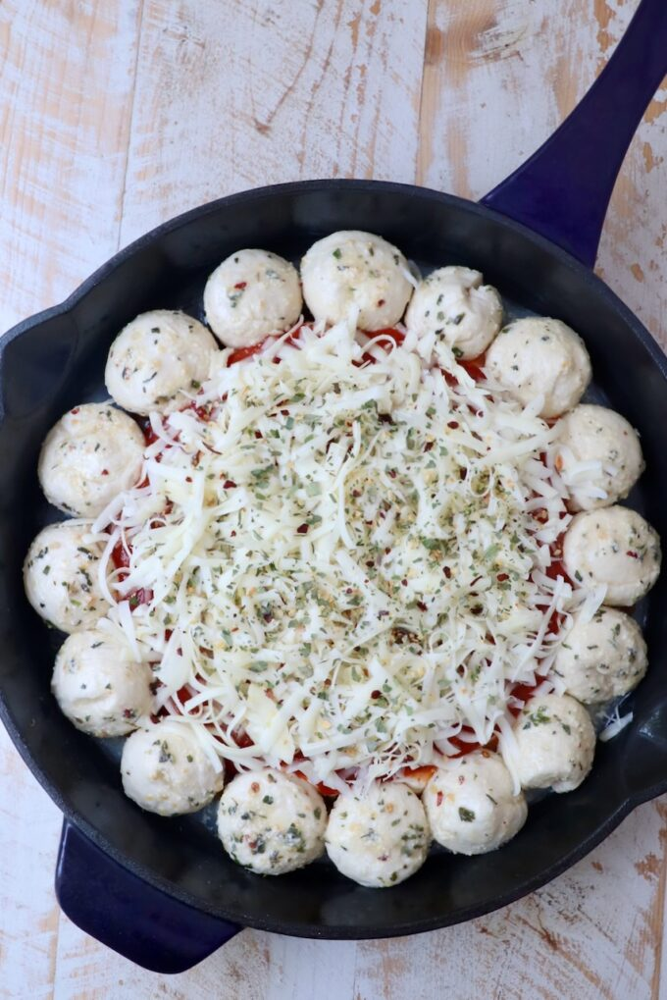
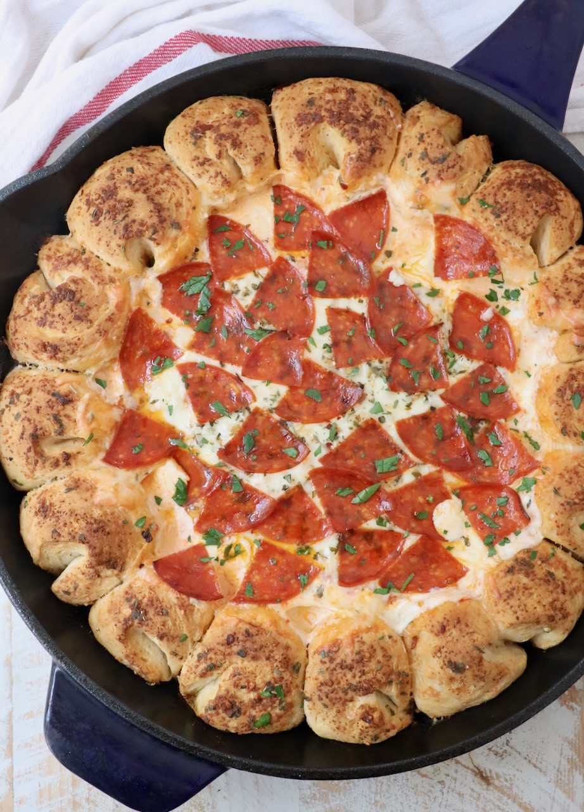
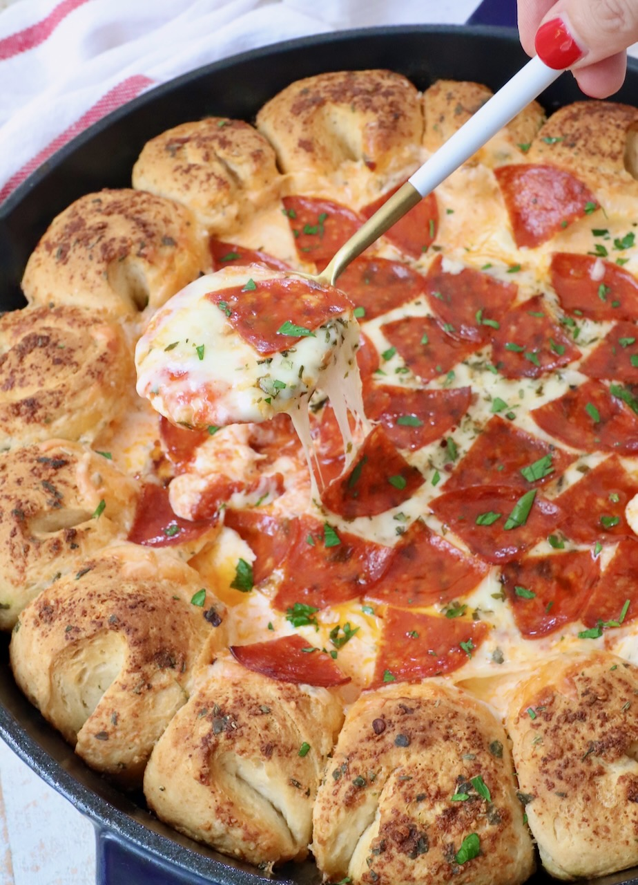

Ingredients - FOR THE PULL-APART BREAD
- 16.3 ounce can Grands biscuit dough
- 8 count ¼ cup melted butter
- 2 teaspoons parmesan cheese
- 1 teaspoon Italian seasoning
FOR THE PIZZA DIP
- 8 ounces cream cheese
- 1 cup ricotta cheese
- 3 teaspoons Italian seasoning
- 1 cup marinara sauce or pizza sauce
- 1 ½ cups mozzarella cheese
- 8 slices pepperoni
- 1 teaspoon Italian seasoning
Instructions







- Preheat the oven to 350°F.
-
Cut each biscuit in half, then roll each half of dough into a ball.
-
Combine the melted butter, parmesan cheese, and 1 teaspoon Italian seasoning in a bowl.
-
Roll each ball of biscuit dough in the seasoned butter, then arrange them around the edge of a greased large cast iron skillet.
-
Combine the cream cheese, ricotta cheese and 2 teaspoons Italian seasoning.
-
Spread the cream cheese mixture in the bottom of the skillet in the middle of the balls of dough.
-
Top with marinara sauce, shredded mozzarella cheese, Italian seasoning and pepperoni.
-
Place in the oven and bake for 25-30 minutes.
Another Section

.jpg)